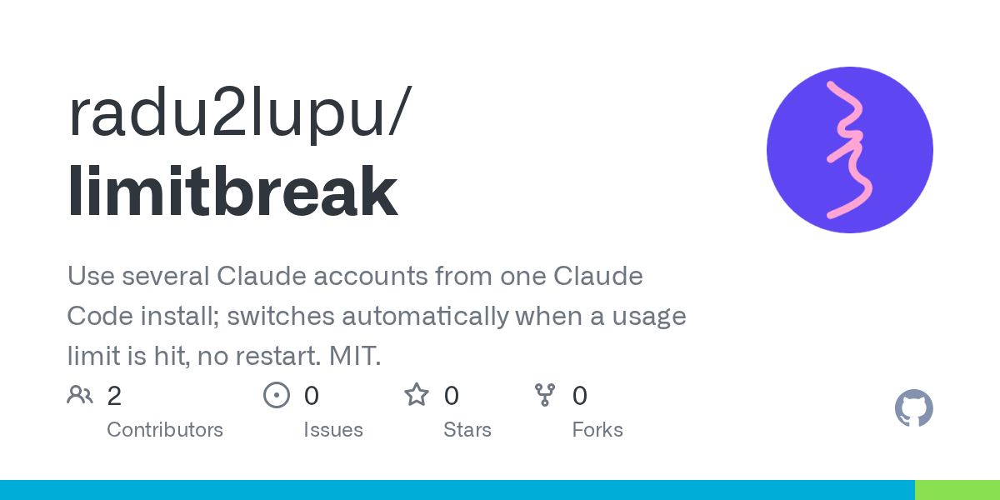
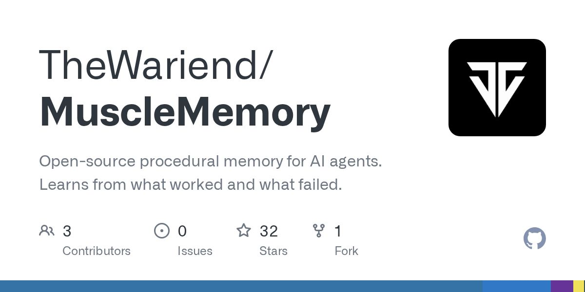
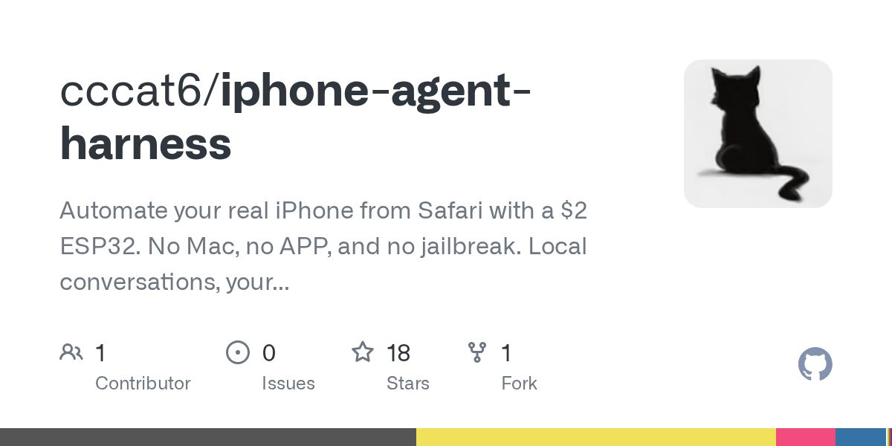
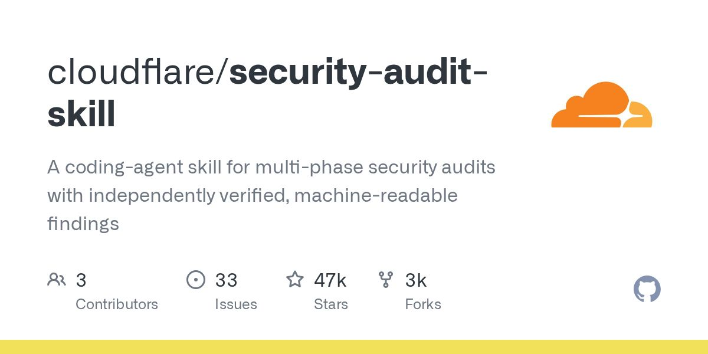
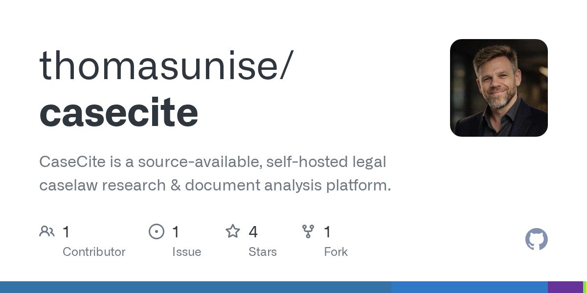
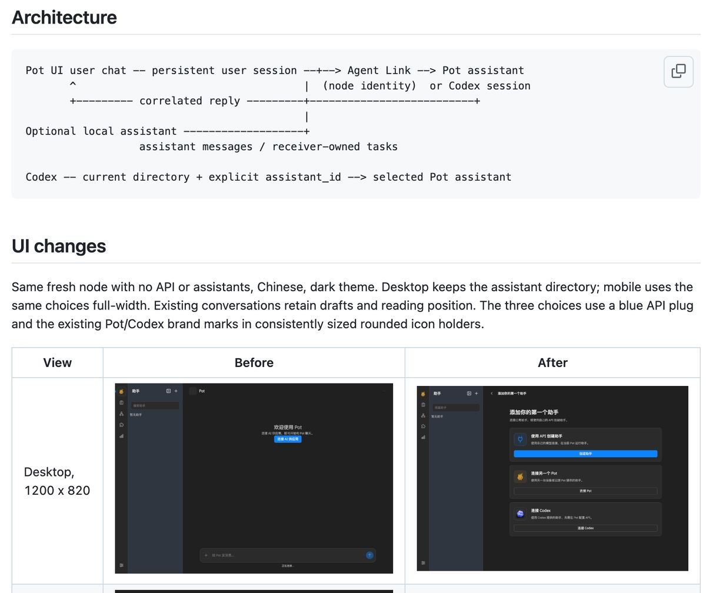
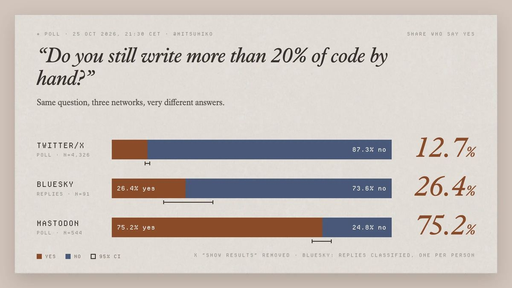
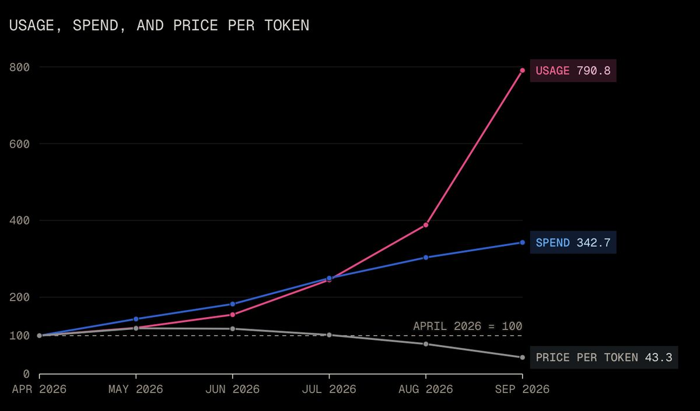

OpenAI 和 Anthropic 几个月内最高把 LLM 价格砍到约两成。

时间窗口：10-25 08:00 到 10-26 08:00（台北时间）。周日到周一清晨，官方博客/Release 几乎静默，增量主要来自 HN、V2EX、即刻和中文 X 垂直账号。每条都读过正文、核对过日期。和 10-22 到 10-25 日报重复的（Thariq 离职、Kimi K3.1、Cursor 电脑操控、Kindle 越狱、impeccable/hallmark/cindy 等）不再收录。
Business Insider 报道 Apollo 的经济分析，称 Corporate America 里看不到清晰的钱。原文（datePublished 2026-10-25）
皮肤科医生 Magnus Lynch 在 200 例活检病灶上对比：2015 年 Inception v3 微调正确率约 62%，GPT-6 Astra / Claude Fable 5.1 约 42%。可用于理解专用小模型与通用大模型的差异。原文（文内 25 October 2026）｜HN 窗口内约 386 分
康奈尔教授 Steven Strogatz 在 The Atlantic 写纯数学被冲击的现场感——系里 town hall、同事像「守灵」一样留酒，并区分应用数学拥抱工具、纯数学痛失「理解过程」。原文（2026-10-25）
楼主正文为空，但 25 条回复集中吐槽 Opus 5.5 期 Codex 又慢又笨，Claude Design/Canvas/自动模式更香；双持的人多半是怕 Claude 封号和 Tibo 额度重置。帖子（10-25 18:40，25 条回复）
门槛比当年「小龙虾」更低；技术老板若没高频用过前沿 Coding Agent，突然体验「聪明模型+自动化」容易沉迷——「大观园日常 vs 刘姥姥进园」。推文（10-25 11:52，351 赞，约 5.1 万浏览）
窗口内没有新版本（Claude Code 最新仍是 v2.1.310，Codex 最新 0.165.0-alpha.1，Cursor Changelog 仍停在 10-16）。
人和多种 Agent（Claude / Cursor / Codex 等）共享同一份实时产物（文档、报告、幻灯、应用），带权限和版本历史，自称 Launching today，YC。Product Hunt｜官网（feed 发布时间约 10-25 05:39 UTC）

本地 Go 代理，一个 Claude Code 安装挂多个 Anthropic 账号，撞 5 小时/周限额时自动切号并重放请求、不丢会话。涉及多账号额度管理，同时存在账号政策风险。GitHub（Show HN 在窗口内）

开源、默认本地的 coding agent「程序记忆」——任务测通后记下改了哪些文件和测例，下次相似任务少走弯路；自述 benchmark 约省 25% input tokens。GitHub

附三张对比图，评论在讨论官方插件能不能自写。V2EX（10-25 12:23，19 条回复）

戴森球/微缩景观风格桌搭 UI；任务来自桌面定时、Webhook+CLI 等，单次路由到两个 Agent，并与现实时间/天气同步。技术栈：Claude Opus 5.5 搭视觉与框架，指挥 GPT-6 Astra 建模渲染，Codex 在自建 CI 做端到端测试。推文（10-25 21:07，485 赞，约 3.45 万浏览，292 收藏）

用 Opus 5.5 + Three.js 覆盖英国 GCSE「能量」整章共十课，宝玉做了中文转述。宝玉（10-26 01:04）｜试玩链接见推文内 iamtechartist.com/every-joule/
真实字帖训练，三层动态书法异形引擎 + 不等距竖排，自称约到原帖 90% 水平。V2EX（10-25 08:41，18 条回复）
把诗变成只由诗中文字构成的图，分「找事实 / 定投影 / 排路径」三步。即刻（10-25 12:02）

cloudflare/security-audit-skill（编码 Agent 多阶段安全审计，当日约 +2878 星）、VoiceStudio（本地 ElevenLabs 平替，约 +1317 星）、claude-seo（Claude Code SEO skill）、JetBrains/thinkrail（轻量 IDE + vibe coding）。impeccable / hallmark / cindy 仍靠前，昨天已收，不重复。
模仿 Arc 的浏览器插件 Riparc、GitHub 热点站 OpenPulse、浏览器本地和弦识别 ChordFold、AI 编程中文词典 71 词条

可自托管的法律文书 RAG（自带密钥、无遥测），面向律所私有语料。面向律所或咨询公司的内部知识库需求。GitHub（Show HN 窗口内）
讨论 AI 订阅额度与账号政策，可对照 Codex vs Claude 和 limitbreak 的相关讨论。V2EX（10-25 23:56）

作者吐槽写一下午精疲力尽但成果不显著，归因于反复教细节习惯，并开源助手 Pot。反映了使用 Agent 编程时的任务管理与精力成本。V2EX（10-25 10:37）
按商品图/海报/手办等场景整理入口与提示词，按积分计费，提供按场景整理的提示词和工作流。V2EX（10-26 00:49）
窗口内新帖是代剪、换电顾问、餐饮企划，没有 AI/开发向岗位；AI 相关岗位仍停在更早日期。

「你现在还手写超过 20% 的代码吗？」X 上约 12.7% 答是，Bluesky 约 26.4%，Mastodon 约 75.2%。可作为观察编程工作方式的数据参考。宝玉汇总（10-26 04:50）


Claude Code / Codex Releases、Cursor Changelog（最新仍 10-16）、Anthropic News、OpenAI News（最新 10-23）、Google AI Blog（最新 10-21）、AIbase / AI工具集 / 量子位（最新都停在 10-23）、Ben's Bites（最新 10-22）、Simon Willison（最新 10-24 小游戏）、阮一峰周刊（周五）、TLDR AI（窗口覆盖周末，最新可读仍是 10-23 刊）
Reddit r/vibecoding、r/ClaudeAI（全路径超时/限流/安全拦截，本窗口无法核验，不收录）
少数派《60 元蓝牙遥控器做 vibe coding 神器》RSS 显示 10-25，但正文 datePublished 是 2026-09-22（Matrix 再推荐）；伯克利教授「改作业没意义」原文 10-23，仅 HN 热度在窗口内，未作主条
电鸭窗口内无 AI 岗位；Indie Hackers / 机器之心缺可靠时间戳；Product Hunt 除 AgentGrid 外无窗口内新产品
官方账号（AnthropicAI、claudeai、OpenAIDevs、cursor_ai、bcherny、karpathy、simonw 等）窗口内无原创；铁锤人仅有回复；Kindle 相关向阳乔木帖按昨日已收跳过；中文帖已收录一手信息
The Rundown（邮件订阅）、HF Papers
掘金 AI 热榜、今日热榜、36氪、smol.ai 等